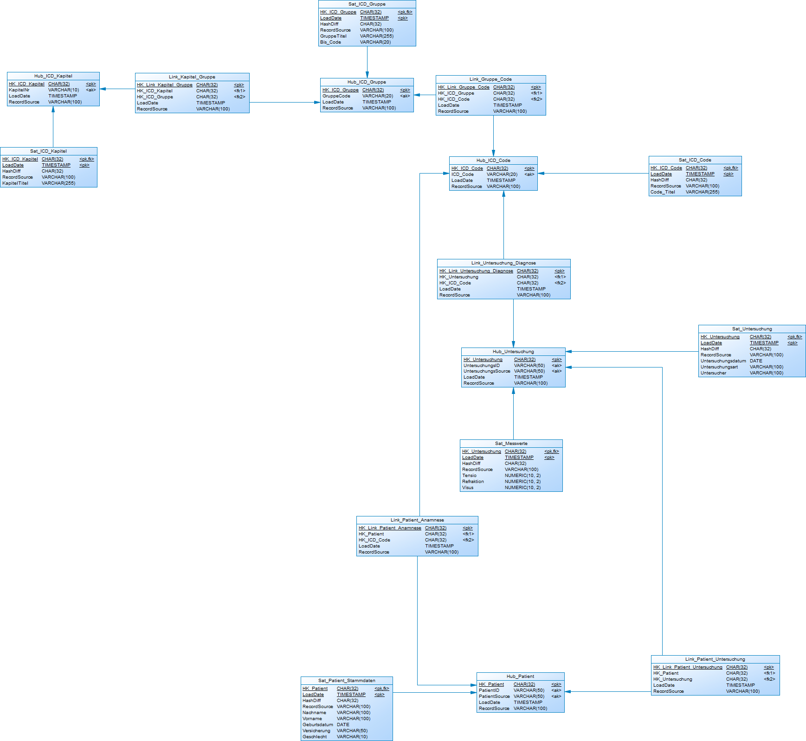
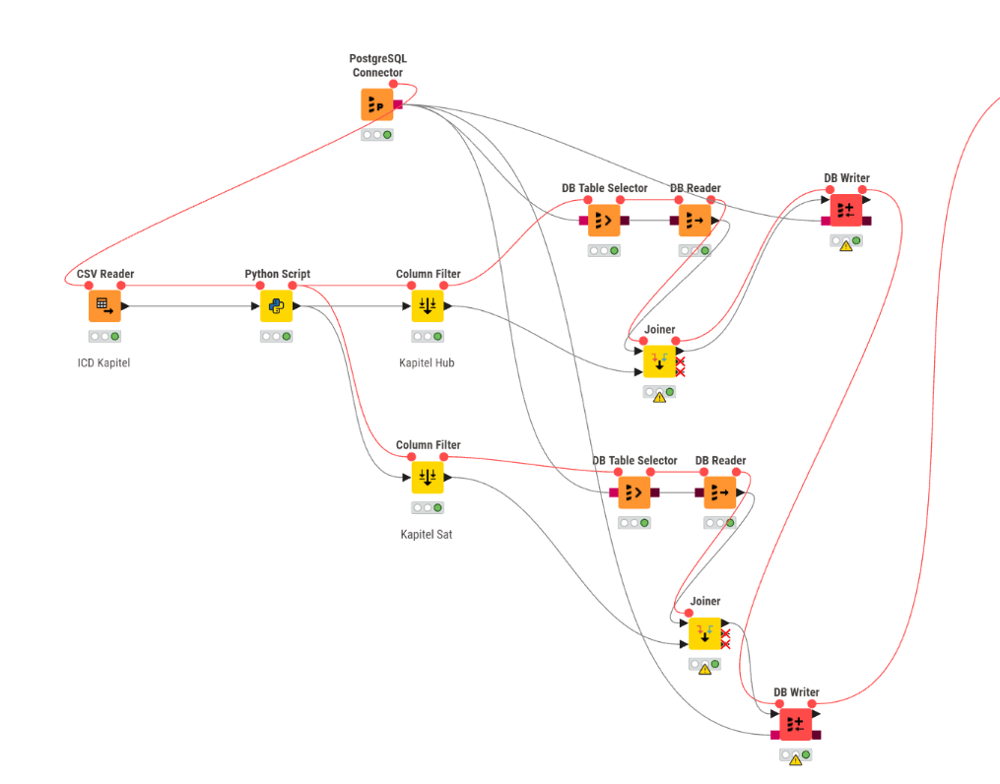
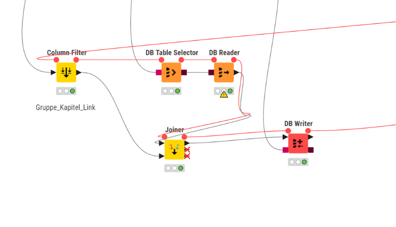
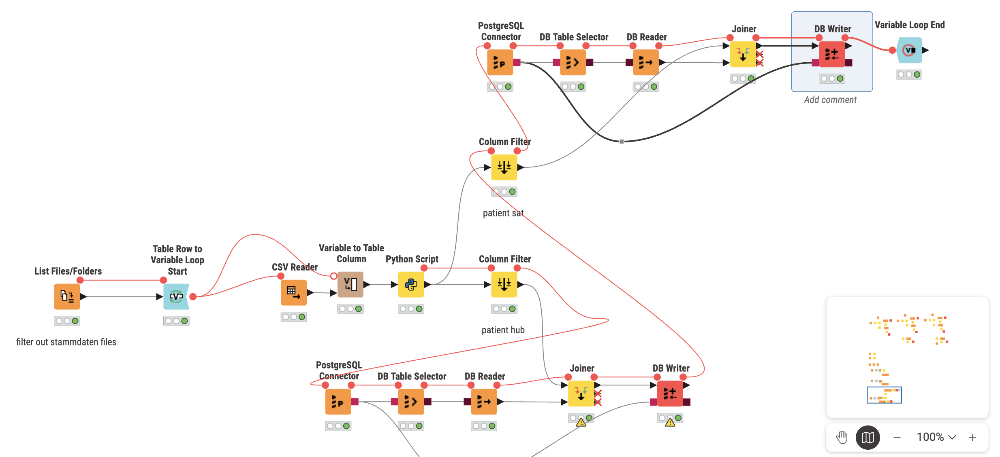

Praktikum 3 - Gruppe 10
Known Problem with first edition data vault model

With this current physical data model, the problem with this model is that there is no unified patient key, and data is still separated by origin.
Die Daten sollen im Data Warehouse mit einem einheitlichen Patientenschlüssel zusammengelegt und nicht mehr nach Herkunft getrennt werden => Data should be merged with an unified patient key and no longer separated by origin
Current schema:
CONSTRAINT UQ_Hub_Patient UNIQUE (PatientID, PatientSource)
This mean: - Patient "12345" from praxis_coesfeld => Hub entry 1 - Patient "12345" from uniklinik_saarland => Hub entry 2
Even if this is the same person, they remain separated in this data vault schema
Proposed solution?
Unified Patient: If the same person visit different kliniks, how do we know that it's the same person? - This is the fundamental problem, normally this would be easier if we have 1. Versicherungssnummer 2. Echte ID Nummer 3. Adresse oder Postanschrift Currently we have none of these here, What is the chance of 2 People having the same name and same birthday? This is why we would still go for levenshtein algorithm, but in the end we didn't populate the table patient_master hub link sat because it's a bit complicated
Knime Workflow
Hub and Sat
Currently for the hub and satelitte we are using this workflow for ICD Gruppe, Codes and Kapitel To keep this simple, the table codes will only save the code and code description, other value with unknown description will not be saved

Link
After inserting Hub and Sat, the last thing we need to insert is Link tables, which is as followed:

Patient
Now that we are done with ICD data, the next thing would be data from patients from different Praxis and Klinik
We could reuse the same component for filtering row, db connect and reader and joiner for writing into database
To create a loop for each type of data from different Praxis/Klinik, we use List Files/Folder and Table Row to Variable Loop Start + Loop End Nodes to create a loop
Basically it will loop through all Stammdaten files (from all Praxis/Klinik) in the folder and execute the ETL pipeline

The workflow is basically the same across hub patient, hub untersuchung, sat messwert, etc...
The differences are the python scripts and what Row Filter nodes filter out
If you want to see the full data pipeline in knime, you can load the MLOPS.knwf into KNIME
Data Sources
The project processes data from multiple sources: - 9 Praxis locations: Coesfeld, Hamm, Neunkirchen, Pirmasens, St. Wendel, Telgte, Unna, Warendorf, Zweibrücken - University Clinics: Münster and Saarland - ICD Data: Codes, Gruppen (Groups), and Kapitel (Chapters)
For each praxis/clinic, we have three types of files:
- stammdaten.csv - Patient master data (Name, Geburtsdatum, etc.)
- anamnesen.csv - Patient medical history
- messwerte.csv - Measurement values (Visus, Tensio, etc.)
Database Schema Overview
The Data Vault consists of:
Hubs (Business Keys)
Hub_ICD_Kapitel- ICD chaptersHub_ICD_Gruppe- ICD groupsHub_ICD_Code- Individual ICD diagnosis codesHub_Patient- Patient IDs (separated by source)Hub_Patient_Master- Master patient records (unified)Hub_Untersuchung- Examinations
Links (Relationships)
Link_Kapitel_Gruppe- Kapitel to Gruppe relationshipLink_Gruppe_Code- Gruppe to Code relationshipLink_Patient_Master- Patient to Master patient relationshipLink_Patient_Anamnese- Patient to diagnosis historyLink_Patient_Untersuchung- Patient to examinationLink_Untersuchung_Diagnose- Examination to diagnosis
Satellites (Descriptive Attributes)
Sat_ICD_Kapitel- Kapitel descriptionsSat_ICD_Gruppe- Gruppe descriptionsSat_ICD_Code- Code descriptionsSat_Patient_Stammdaten- Patient details by sourceSat_Patient_Master_Stammdaten- Unified patient detailsSat_Untersuchung- Examination details (date, location)Sat_Messwerte- Measurement values
Data Quality Notes
- The ETL pipeline filters out rows with unknown or missing descriptions
- Duplicate records are handled by checking existing HashKeys before insertion
- Each record tracks
LoadDateandRecordSourcefor lineage